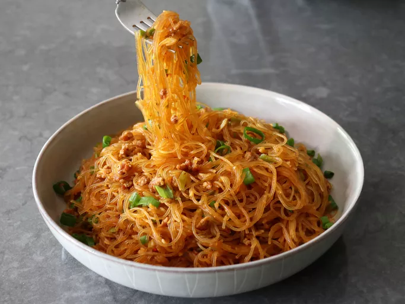

Home
Glass Noodles Recipe

Description
This is Chef John's take on the classic Sichuan dish Ants Climbing a Tree, a magnificent mix of glass noodles and ground pork that is rich, spicy, and savory. The name is derived from the way the bits of pork stick to the noodles in the finished dish.
Ingredients
- 4 oz mung bean glass noodles (mung bean vermicelli)
- 2 tablespoons vegetable oil
- 6 oz pork
- 3 garlic cloves, finely minced
- 1 tablespoon finely minced ginger
- 2 tablespoons Chinese spicy fermented bean sauce
- 1/4 teaspoon ground Sichuan pepper
- 1 teaspoon white sugar
- 2 teaspoons soy sauce
- 2 cups chicken stock
- 1/3 cup sliced green onions, plus more for garnish
Steps
- Add dry glass noodles to a large bowl and cover with cold water. Gently loosen the noodles apart with your fingers, and submerge noodles completely in water. Let soak for 10 minutes. Drain well and reserve.
- Meanwhile, for the sauce, add oil to a skillet set over medium-high heat. Add pork, and cook for 3 or 4 minutes, breaking up the meat into small crumbles with a spatula. Continue to cook until pork starts to brown, 1 or 2 minutes more.
- Add garlic, ginger, and fermented bean sauce, and cook, stirring, for 1 minute. Add Sichuan pepper and sugar, and cook, stirring. 30 seconds more.
- Add soy sauce and chicken broth; raise the heat to high and bring sauce to a boil. Add drained noodles and green onions.
- Cook, stirring with tongs, until noodles are soft, but retain a slight chewiness, 2 to 3 minutes. Remove from heat; noodles will continue to soak up most of the liquid after removing from heat.
- Transfer into a serving bowl and garnish with more sliced green onions.